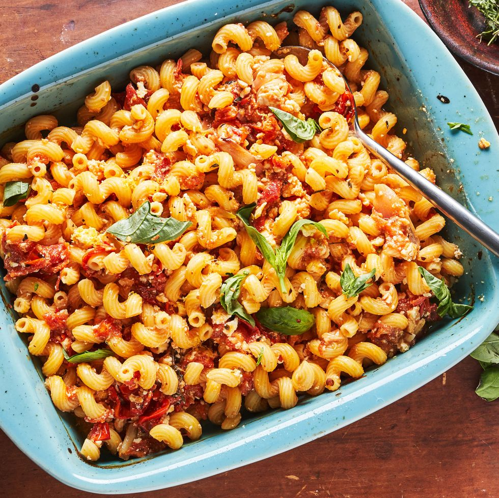

Index
Feta Cheese Oven Pasta

Description
This recipe is based around making the pasta sauce in the oven.
The sauce uses feta cheese
(vegan alternatives work fine also!) and tomatoes.
This combination is spiced up by the addition of some fresh basil
and the usual salt and pepper. If you like to eat spicy, you can add
some chilis, too.
Ingredients (makes several days' worth)
- 500g Pasta
- 200g (one block) Vegan Feta Cheese
- 200g Tomatoes
- Oil
- Basil
- Garlic however you like it (minced works well)
- Salt
- Pepper
- Chilis (optional)
Steps
- Lightly coat a small-to-medium size baking dish with oil.
Place the cheese in the middle of the pan
and fill out the rest of it with tomatoes.
Drizzle cheese and tomatoes with oil. Add salt and pepper. If you
want, add the chilis here.
Bake for around 30 minutes or until the tomatoes are starting to collapse.
- While you're baking the sauce, cook up the pasta however you like or according
to the instructions on the package.
- Once the sauce is done, take it out of the
oven and combine it with pasta. You may want to give the sauce a
bit of a stir before you combine. If the pasta is not done yet
for some reason, just make sure you don't bake the sauce too much while you wait.
- Add the basil, garlic and whichever other herbs you like and give it one last mix!
- Enjoy!!